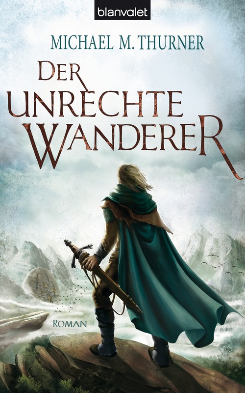

von Carsten Kuhr (www.phantastik-news.de)

Michael M. Thurner: Der unrechte Wanderer (© Blanvalet)
(ck) – Es ist eine archaische Welt, in der Magicae und Wicca einander seit Jahrhunderten misstrauisch gegenüberstehen, ja sich oftmals bekämpft haben. Eine Welt, in der das Recht des Stärkeren, oftmals das Recht des Brutaleren gilt, eine Welt, die geprägt wurde von Krieg und Not. Der letzte Krieg, den der Gottbettler vom Zaun brach, erschütterte die Reiche und zerstörte das Machtgefüge. Seitdem versuchen die Menschen, mühsam und langsam, wieder auf die Beine zu kommen.
Sowohl Wicca als auch die Magicae suchen sich neues Wissen und Kräfte anzueignen. Und was wäre besser dazu geeignet, die eigene Machtbasis zu verbreitern, als Wissen aus der fernen Vergangenheit, als die Welt noch besser, machtvoller und gebildeter war?
Als Eldur aus der Treibgierde, einer Blase außerhalb der Zeit, in der sich Wicca und Magicae aktiv bekämpfen, im wahrsten Sinne des Wortes gefischt wird, beginnt sich das Machtkarussel von neuem zu drehen. Der Magicae Pirmen Copurtix, der um seine Kräfte zu vergrößern sich seine Gliedmaßen und Hoden hat amputieren lassen, wird von Gafelay ausgesandt, Eldur für seine Seite zu rekrutieren und dessen Geheimnisse zu ergründen. Doch auch die Wicca Terca hat ihre Verbündeten im Kampf um den Mann aus der Vergangenheit in Stellung gebracht. Angeschlossen hat sich Eldur die einstige Edelfrau und jetzige Hure Amelia sowie der unbelebte Nerbo Falthaut / Xingo, und auch der Kämpe Ox ist mit von der Partie.
Nach einer mehr als abenteuerlichen Reise erreichen die Parteien die Wiccaburg, in der sie von der Hohen Frau schon erwartet werden. Doch auch hier ist noch nicht das Ende ihrer Reise gekommen - geht es doch darum, die Treibgierde aufzulösen; und dies können nur die Todfeindlichen Geschwister, die sich vor Jahrhunderten in das Schlammeis zurückgezogen haben…
Zum zweiten Mal öffnet Michael M. Thurner sein Fantasy-Schatzkästchen und entführt uns in seine etwas andere Fantasy-Welt.
Was in „Der Gottbettler“ begann, das findet vorliegend seine Fortsetzung, die als solche zunächst nicht zu erkennen ist. Zwar begegnen wir Figuren aus dem ersten Roman wieder, doch sehr lange ahnen wir nicht wirklich, um was es geht. Die parallel laufenden Handlungsstränge scheinen zunächst nichts miteinander zu tun zu haben, und doch üben sie eine Faszination auf den Leser aus, der er erliegt. Oftmals fragte ich mich in der ersten Hälfte des Romans, wo dies wohl hinführen würde, war versucht, das Buch zuzuschlagen nur um dann doch, zu neugierig um aufzuhören, weiterzulesen. Gar zu interessant boten sich das Bild der nach wie vor vom Krieg geprägten Welt, die Figuren, ihre Motivation und ihr Schicksal an.
Das übt einen unbestrittenen Sog auf den Rezipienten aus, ist erfrischend anders, weit abseits der üblichen Heldengeschichten. Immer wieder nimmt die Handlung in der Folge dann unerwartete Wendungen, überrascht uns der Autor mit so nicht vorhersehbaren Entwicklungen.
So bleibt die Lektüre jederzeit interessant, reiht faszinierende Gestalten zu Geheimnissen und einer in ihren Einzelheiten markanten Bühne.
Michael M. Thurner: Der unrechte Wanderer
Titelillustration von Melanie Miklitza
Blanvalet, 2015
Paperback, 506 Seiten
ISBN 978-3-442-26404-9 (auch als eBook erhältlich)